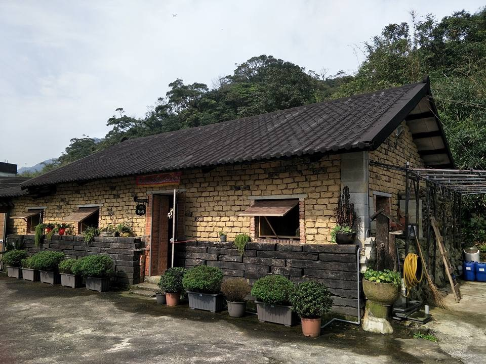

修舊如舊
簡家土埆厝建於 1910 年，從一條龍格局到增建護龍，歷經荒廢與修復。四兄弟出錢出力，讓沉睡多年的老屋重新恢復生機。

網站主題
從美人山下的土埆厝出發，人生曾到台北推銷影印機、遠征台南經營茶行，也回到工程本行參與捷運建設。走了很遠才明白，最想留下的不是履歷，而是家、土地與時代共同刻下的痕跡。
開場故事
簡家土埆厝建於 1910 年，從一條龍格局到增建護龍，歷經荒廢與修復。四兄弟出錢出力，讓沉睡多年的老屋重新恢復生機。
昔日水田如今改種洛神花、金桔、南瓜等蔬果，堅持不施化肥、不噴農藥。回到土埆厝，也像回到小時候騎牛放牛的日子。
從黃埔大背包走出台北車站，到台南茶行、木柵線、北二高與捷運局，每一次轉身都不是離開，而是把人生推往下一站。
金山美人山下的梯田、水圳、竹林、溪蝦與水牛，是農家子弟最早的生命底色。
閱讀故鄉從 1910 年落成、四兄弟修復，到今日返鄉務農，整理土埆厝重生的歷程。
查看時間軸台南茶行創業、景氣反轉、回到營建本行，再投入捷運工程，是人生重要的轉折線。
閱讀生命誌苗栗頭份的養蜂人家，從爺爺五十餘年的蜂農歲月，到下一代承接蜂群與家業。
進入養蜂故事蜂蜜結晶、百花蜜、龍眼蜜與蜂農逐花而居的日常，都可以慢慢整理成知識庫。
閱讀蜜蜂知識退伍、求職、創業、工地、品管、安衛與捷運，每一段都是時代現場的一部分。
閱讀故事老屋、梯田、品茗桌、捷運工地與蜂箱旁的照片，讓文字有了可以回看的畫面。
瀏覽相簿把故鄉、茶香、工程與蜂蜜寫成歌，讓人生故事可以被唱出來。
打開歌曲台灣茶、紫砂壺、和田玉與老物件，未來都能成為生命記憶的數位典藏；和田玉收藏已另外整理成專屬網站。
進入和田玉收藏照片相簿
目前相簿已放入土埆厝、金山景色、茶行、捷運工程與翔勝養蜂照片。點開照片可看日期、地點、相關歌曲與簡短說明。
最新文章
片刻記憶